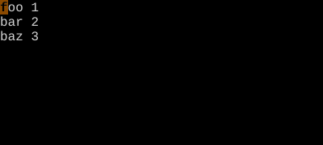
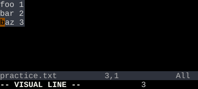
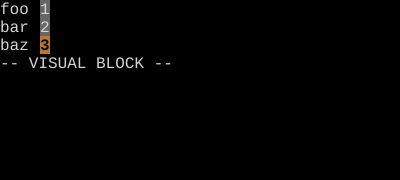

Line and Block Visual
Two more shapes for the same select-then-act idea.
V enters visual-line mode: motions extend the selection by whole lines. Ctrl-V enters visual-block mode: the selection is a rectangle, useful for column edits.
v selects characters. Two more visual modes select differently-shaped regions: V for whole lines, Ctrl-V for rectangles.
| Key | Note |
|---|---|
| {key:V} |
| Key | Note |
|---|---|
| {key:Ctrl-V} |
Reference
| Key | Selection shape |
|---|---|
| v | Characters from anchor to cursor |
| V | Whole lines |
| Ctrl-V | Rectangle (block) |
Worked example — V and Ctrl-V
Linewise vs block visual.



Visual-block mode operates on a rectangle — perfect for tabular data and column edits.
See also: Character Visual Mode, Block Insert and Append, Indent and Auto-Indent